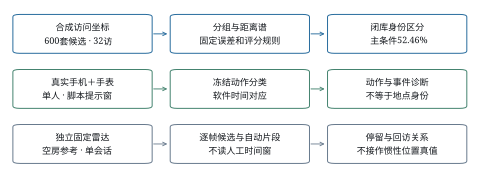
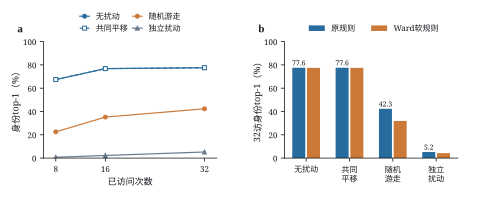
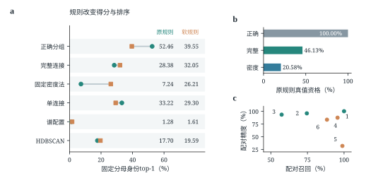
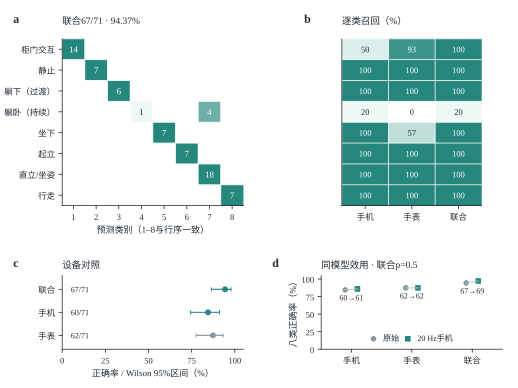
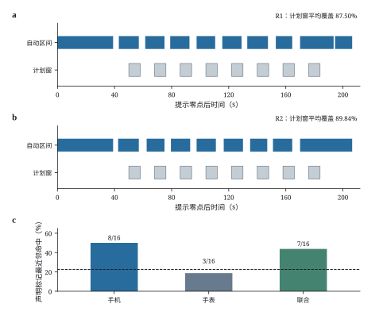

访问几何、误差结构与真实链路的测量边界
中文研究论文初稿 2026年11月2日 供导师讨论
手机和手表记录能够反映活动与相对运动，但活动识别分数不能直接说明所处空间能否被识别。本文研究给定访问几何在何种候选、误差和分组条件下保留空间身份区分。六类共600套合成候选、每房四条路线的闭库测量显示，32次访问、正确分组和指定随机游走误差下，固定匹配规则的身份top-1为52.46%；无扰动条件下达到77.56%。0.2 m点集表示将600个身份归为492个等价类，说明候选表示本身也限制身份区分。自动地点分组与替代评分规则共同改变结果幅度，单一坐标误差参数不足以描述匹配风险。真实手机手表记录支持提示窗内的动作分类；新两布局试点覆盖了两段各8个计划停留窗，但缺少独立站点归属与物理同步证据，尚未建立真实空间身份识别。这些结果区分了相对几何的条件能力与真实前端的证据范围，可用于审查空间隐私结论是否超出了其输入和参考证据。
关键词：空间隐私；惯性传感器；空间可辨性；访问几何；手机手表
口袋中的手机和腕部手表持续记录加速度与角速度，活动状态和相对运动因而可能暴露给能够获得这些记录的分析者。已有研究利用手机惯性数据推断敏感室内地点，也从行走轨迹恢复平面结构，或联合推断人体运动与场景1–3。对空间隐私而言，还需要区分两个问题：传感器是否记录到了活动，以及这些活动积累出的几何线索是否足以区分某个具体空间。
二者之间存在若干不可互换的端点。识别坐下不能确定椅子身份，相对位置不提供房间原点，正确的同地关系也未必对应唯一候选布局。候选空间可能在允许的表示下同构，前端误差可能保留或破坏相对距离，自动分组又会改变匹配器接收的点数和几何。把动作准确率、分组精度和布局排名拼成一项“空间恢复率”，会掩盖这些条件。
本文采用受控闭库测量这一条件问题。分析者得到带指定误差的访问坐标和候选站位点集，原点、朝向和测试时的真实地点分区不作为自动臂输入。测量首先回答访问预算与表示别名限定了多少身份区分，再检查误差结构、地点分组和评分规则如何改变结果。真实动作、固定雷达和两布局试点作为不同层次的证据单列，核查现有设备能否提供相应输入。
本文的贡献是这一条件测量及其边界，而不是提出更优的轨迹或场景重建算法。Walk2Map已经讨论轨迹证据的歧义与级联误差；IMU-to-4D也已研究从可穿戴惯性输入联合推断人体与场景2,3。本文关注给定候选内的身份端点，保留强几何对照、替代规则和真实失败位置，避免将特定实现的分数解释为惯性原始信号的信息上界。
合成候选包含宿舍、公寓、会议室、办公室、教室和酒店六类，每类100套测试房屋，每房四条路线，共2400条查询。独立实验单位是房屋，四条路线整体保留。站位位于0.2 m格点，600个身份在既定点集表示下对应492个等价类。其中421个身份为单例，另外179个身份处于71个多成员类，最大类含9个身份。在均匀先验、类内观测律相同且没有额外区分信息时，完整表示的理想参考为492/600=82.00%。这一参考不约束允许额外语义或访问习惯的所有攻击者。
在32次访问、正确分组参照、随机游走末访每轴标准差0.5 m和原匹配规则下，身份top-1为1259.105556/2400=52.46%，按房型分层重抽整房的95%区间为[50.31%,54.40%]。421个单例与179个有别名身份分别为66.15%和20.27%。这些数值评价给定坐标的条件区分，不是手机手表实测的房间识别率。图1说明本文各证据层的输入和输出。

图1 合成身份测量与真实模块证据的分层
合成线接收指定访问坐标；动作线接收手机和手表记录及提示窗；固定雷达线独立产生片段与关系证据。各线的输出端点不同，图中的平行关系不表示已经接成真实房间恢复管线。
无计数惩罚、正确分组的既有扫描中，访问8、16和32次的top-1依次为22.52%、35.21%和42.33%，top-5为45.04%、63.72%和68.56%。三个预算是同一32步误差过程的嵌套前缀。扩展前缀同时增加空间覆盖、回访与误差积累，因而这里描述该冻结过程中的预算表现，不单独识别访问次数的因果效应。计数惩罚后的52.46%与无惩罚的42.33%也不是两个访问预算。
图2比较访问积累与四种误差过程。32次访问、正确分组、无计数惩罚时，原规则在无扰动、共同平移、随机游走和独立扰动下的top-1分别为77.56%、77.56%、42.33%和5.23%。共同平移不改变两两距离，其与无扰动同值是表示不变性的控制，不构成第二次独立证据。

图2 访问预算与误差结构下的身份区分
a，同一600房屋、四路线的8/16/32访前缀，正确分组、原规则、λ=0。共同平移与无扰动曲线重合。b，32访下原规则与Ward软规则的四格对照。随机游走σ指第32访每轴标准差，独立扰动σ指每次访问每轴标准差；两者均标称0.5 m，但逐访边际方差不同。图中不新造跨种子区间。
这些过程通过相对误差而非原点误差进入距离谱。共同偏移在作差时消失；独立误差与随机游走则具有不同的两点误差差分。四格比较同时包含不同的逐访方差分布，不能当成等RMS条件下仅改变相关性的单因素实验。它说明“位置误差0.5 m”不足以定义当前匹配器的输入条件。
更强的几何读法也必须纳入比较。同一32访、随机游走和λ=0条件下，完整候选归一化谱分位曲线为48.90%，部分米制距离谱为56.45%，部分归一化距离谱为42.33%。本文实现没有超过这两项强对照。米制与归一化读法同时改变目标函数，约14个百分点的差值不能全部归因于尺度信息，也不能用56.45%替换已冻结的主配置。
将同一批含噪坐标交给自动地点分组后，原固定完整连接和密度法的身份top-1分别为28.38%和7.24%，见表1。正确分组参照只替换访问分区，坐标和候选保持相同；它不是所有攻击者可达能力的上界。
表1 同坐标、同候选和同2400查询分母下的分组输入对照
| 分组输入 | 原规则top-1 | Ward软规则top-1 | 原规则真值资格 |
|---|---|---|---|
| 正确分组参照 | 52.46% | 39.55% | 2400/2400 |
| 固定完整连接 | 28.38% | 32.05% | 1107/2400 |
| 固定密度法 | 7.24% | 26.21% | 494/2400 |
主条件为32访、Brownian末访每轴σ=0.5 m、λ=0.0003；软规则欠容量支路λ=0。真值资格指原规则下真实候选满足K≥Q，不是有限得分候选比例。并列信用为解析期望，故正确数可为非整数。
原规则在观测组数Q超过候选站位数K时排除该候选。完整连接和密度法分别有1293、1906条查询在这一条件下失去真实候选。Ward软规则允许将欠容量观测合并到K个代表，使自动臂得分上升，但正确分组参照也下降12.91个百分点。两自动臂与各自参照的差距从24.08/45.22个百分点收窄到7.51/13.34个百分点。软化同时改变候选资格、合并近似和惩罚，不能把差距收窄解释为纯分组误差被消除。
全部六种分组输入的结果见图3。单连接相对完整连接在原规则下高4.83个百分点，在软规则下低2.74个百分点；λ=0时方向仍反转。各房型并不一致，反转只在公寓和办公室两个房型出现。另一方面，既定谱配置的关系召回为98.86%，关系精度为31.75%，原规则身份top-1仅1.28%。这些比较限定了固定方法组合的解释，不支持按某一个关系指标给整个算法家族排序。

图3 六种分组输入对匹配规则的依赖
同一600房屋、2400路线、32访和λ=0.0003。蓝色圆点为原规则，橙色方点为Ward软规则，灰线连接相同分组输入。原始主表、全部自动配置和失败配置均保留；该替换为复合干预，不能唯一归因为容量或惩罚。
原动作数据由13个会话、165个脚本声明事件组成。确认性T结果使用最初五会话开发集，联合模型为65/71=91.55%，事件级Wilson 95%区间[82.76%,96.07%]。看到T中的床上混淆后，开发集加入D-Ba与D-G1a复录，再次评估同一T得到67/71=94.37%，区间[86.39%,97.79%]、macro-F1=0.9380。这是受T结果影响的第二次评估，不能替代确认性结果。图4a将二者并列，并保留后续T2、T3的变化。
表2 各批次九类动作结果及T3八类辅助任务
| 批次与任务 | 联合 | 手机 | 手表 |
|---|---|---|---|
| T，九类，确认性 | 65/71 | 未在本表重列 | 未在本表重列 |
| T，九类，扩充D后复看 | 67/71 | 66/71 | 65/71 |
| T2，九类 | 61/71 | 63/71 | 56/71 |
| T3，九类 | 64/71 | 58/71 | 56/71 |
| T3，八类，柜门合并 | 67/71 | 60/71 | 62/71 |
标签只来自提示脚本，执行未经独立视频核验。T的复看与确认性数字来自同一留出集。八类将柜门开合合并，改变了任务粒度，不能作为九类模型改善。均为单人、固定场景、提示窗结果。
T3九类联合相对手机的不一致对为6:0，精确McNemar原始p=0.03125，任务内三项比较经Holm校正后为0.0625。八类对应7:0，原始p=0.015625，校正后0.046875。T2的联合结果则低于手机，合并T2/T3九类的不一致对为6:2，原始p=0.2891。因此本稿不主张腕部普遍优于手机。柜门开合互判和lying与upright混淆仍保留；T3九类lying召回仅1/5，整体正确率不代表每类可靠，设备比较与效用检查见图4。

图4 动作批次变化与单档20Hz效用检查
a，四个联合结果，误差条为事件级Wilson 95%区间，仅作描述；T确认与T复看共享71个测试事件。b，冻结T3九类模型的原始与20Hz手机处理流，手表不变。分母各为71；20Hz联合65/71满足预先给出的≥62/71样本容忍线，不构成非劣效证明或隐私结果。
20Hz处理后的九类联合、手机和手表分别为65/71、59/71、56/71，原始为64/71、58/71、56/71。联合和手机各有原始独对1条、处理后独对2条，双侧精确McNemar均为1.0。该事后配对观察满足已给出的样本工程容忍规则，但未建立总体效用等效。它也没有评价空间攻击变化，不能据此宣称防护成功。
固定雷达run007b在2662帧中得到1266帧零候选、1396帧唯一候选，无多候选帧。固定规则不读人工站点窗，形成8个片段，中位时长17.4503 s；全记录分组的关系计数为TP=7、FP=0、FN=0、TN=21。七次历史查询中，完整连接作答5/7且5/5正确，密度法作答7/7但仅5/7正确；两次新地点均被密度法误联。空间反事实零回访输入上，两者误并分别为0/28和21/28。单会话关系结果不提供惯性定位精度或跨房间泛化。
新的R1/L0与R2/L1记录完成手机、手表和固定录像收件。原始手机加速度行数为36766和32142，手表为4233和3722行；手表584、563个数据块CRC全部通过。两份重组包保留原始phone.zip，在manifest中记录单独手表日志的补入来源，原包未改动。跨端时间采用bridge观测中位数与软件映射，physical_clock_accepted仍为false。
样片的30组开发设置产生相同的3个事件，按预声明并列规则选择阈值0.3、最短停留4 s、合并间隙0。样片未区分这些设置，选中项不是由数据选出的最优点。现有评分先从参考中排除三个校准窗，将静止参考切为6个碎片；其一对一匹配结果实际为命中3、误检0、未匹配碎片3，这6个碎片源于校准区间的排除，不能与3次完整静止区间等同。
正式记录中，所选门在R1、R2分别输出10、9个全段事件。自动区间对两段各8个脚本预期停留窗的平均覆盖为56/64=87.50%和57.5/64=89.84375%，最低为6.5/8=81.25%，见图5a、b。相对计划到达提示，事件起点提前的中位数为6.5和6.25 s。由于实际脚位与停留边界没有独立核验，这些数值是计划窗覆盖，不能写成8/8定位或真实停留检测准确率。30组设置的事后敏感性均达到每个计划窗至少60%覆盖，仅说明所测设置下这一描述稳定，不能反向证明未调参。

图5 两布局试点的计划窗覆盖与声明标记诊断
a、b，完整自动区间与8个脚本计划窗，均按提示零点对齐。展示全段多余事件及提前边界，不以人工窗替换自动输出。c，16个提示窗的标准化冻结特征最近邻诊断，物理标记按R1的A=P0、R2的A=P3、B=P2、C=P1重新区分。虚线为按标签频数计算的留一随机参照54/240=22.5%，不是独立验证结果；16访站共享一个人和一个房间，不加虚假的人群区间。
静止期特征的最近邻结果为手机8/16、手表3/16、联合7/16。原报告跨两段按A/B/C同名比较，但A实际从P0换为P3。按P0/P3/P1/P2的声明标记重汇总后，三个命中数恰好不变；标签频数匹配的留一随机参照应为22.5%，而原路线角色标签参照为30%，均不应直接写为1/3。标记标签下，同点/异点平均特征距离比分别为0.849、0.906和0.868。特征在这16个样本上共同标准化，且标记归属仍依赖脚本声明，因此这些数值只作描述性诊断，既未建立可靠站点身份识别，也不足以断言静止惯性信号不含位置相关信息。
本文的正面结果是，相对访问几何在声明候选和误差条件下保留了可测的身份区分；其可利用程度同时取决于候选表示、访问过程和读取规则。无扰动时的较高得分与表示别名共同说明，闭库身份不只是“坐标越准越好”的问题。候选可能在允许的表示中重合，自动关联和评分规则也可能改变真实候选能否参与竞争。
这一端点与既有惯性场景推断相邻，但不能直接按百分比排名。MISSILE研究有地点监督条件下的敏感室内位置推断，Walk2Map从轨迹推断平面结构，IMU-to-4D的输入和训练任务又覆盖更完整的人体与场景信息1–3。本文没有提出性能更高的重建模型，而是测量给定坐标、候选和规则时的身份表现，并以真实模块核查哪些接口尚不能提供同等级证据。
防护评价也应对准分析者真正使用的信息。给所有坐标添加同一平移无法改变距离谱；仅隐藏原点不能据此宣称保护了空间身份。独立扰动与随机游走造成不同结果，提示防护需要同时说明误差相关结构、相对几何畸变和应用效用。20Hz检查目前只覆盖动作效用，其对真实空间端点的影响尚未完成；这里不提供适应性攻击测试或形式化隐私保证。
真实试点限制了从条件测量到设备攻击的外推。较高的动作正确率和计划窗覆盖没有自动转化为站点身份。软件对齐尚未成为物理时间桥，脚位遮挡使视频无法提供独立站点归属，静止特征的最近邻又受转导标准化与小样本影响。现有记录可以核对信号完整性和执行性，不能支持真实房间端到端恢复。该结论保留了系统链路中仍需验证的接口，而没有用一个模块分数替代另一个端点。
本研究还受到一个合成生成器、六房型固定配额、0.2 m格点、单人同场景记录以及已见测试结果后续汇总的限制。生成器排除了紧前一次同站，因而gap=1启发式受到构造性削弱。原始正式记录时长超过先前计划上限，真实参考和时钟证据也未达到最初目标。跨人、跨环境、库外拒识和真实噪声标定均不由本稿推断。当前结果适合表述为受控空间可辨性测量及真实模块诊断，而不是通用空间攻击系统。
合成分析者得到每条记录的二维访问坐标及全部600候选站位点集。原点和绝对朝向不提供，自动臂不读测试真实分区或真实地点数。候选点数属于已知目录信息，真实粗类型仅在明确标记的特权对照中使用。正确分组参照单独获得访问分区，用于隔离这一输入条件。
对点集 的两两欧氏距离排序后，按其均方根归一化，定义距离谱：
式（1） 中的 为点对数， 中的每个点为二维站位。该谱不使用原点、整体旋转、点编号或统一尺度，但不保证对不同几何一一对应。若归一化分母为零或有效点数不足，则按冻结实现记录不可评分，不把退化点集填成正确答案。
对查询 ，令 为并列首位候选集合， 为真实候选身份。身份信用与总体top-1为：
按 式（2） 计算时，不按ID顺序破并列。未作答记0，分母仍为全部查询。作答率和已答精度另行计算，不以少答获得的高精度替代固定分母表现。对 个均匀先验身份，若表示划分为 个等价类，且类内观测律相同、没有额外侧信息，则完整表示理想参考为：
式（3） 中的 遍历等价类。本库 、；这是一项附带假设的表示参考，不是原始IMU信号的通用信息上界。非均匀先验下相应表达为各类最大先验概率之和。
随机游走以32访为固定完整过程。真实位置 的含噪观测为：
式（4） 中的 是第32访每轴误差标准差。8访、16访末次标准差分别为0.25 m、约0.3536 m，各预算分母始终为√32。共同平移为所有点共享同一误差，独立扰动为每访独立采样。RoNIN刚性拟合RMS、雷达回访散布与这里的σ定义不同，不能直接互换。
给定 个观测组代表与 点候选，原规则枚举候选 点子集，取与观测归一化谱的最小RMS差 ，并计算：
式（5） 在 时硬排除候选。Ward软规则在K≥Q时不变；2≤K<Q时将Q个观测代表按Ward准则合并为K个点，与候选完整谱比较，该支路λ=0。它是确定性近似，不是最优空间指派。源码修复前的表A存档未绑定当前源码SHA，表B和四格则绑定各自快照；本稿保留该历史绑定缺口，不以当前哈希补证过去。
固定完整连接以正两两距离中位数作尺度，截断值α=0.2。固定密度配置采用HDBSCAN，min_cluster_size=2、min_samples=2、epsilon=0、allow_single_cluster=True4。未分配访问各保留为单例，32访全部进入一个且仅一个组，组代表为坐标均值。附加单连接、谱和HDBSCAN配置在72开发房屋的288路线中按输出组数与真实被访地点数误差选择，未用测试身份得分选优。
模拟区间按六房型固定配额分层重抽整房1000次，每房四路线整体保留。区间条件于当前生成器与每类100套的设计，不覆盖跨生成器或跨种子的变异。规则反转与相应对比是在已有封存分数上提出的事后汇总，不称新的确认性检验。421/179子集与全库重叠，不增加独立样本量。
动作区间使用事件级Wilson方法，设备差异采用精确McNemar并在各T3任务的三项设备比较内做Holm校正。事件共享会话，区间和检验不支持跨人推断。两布局的16访站、56对关系或逐窗输出也不能当作16/56个独立房间样本。
动作窗固定为提示起点后[1,4) s，基础统计附加三个1 s子窗模长、首尾0.5 s方向、积分及手机陀螺能量。联合臂拼接手机与腕部特征，随机森林400棵树、random_state=0，不作标准化5。扩展开发集为7会话94事件，1个事件缺有效腕部输入，联合与手表训练量93、手机94。当前分析只加载冻结模型，不重新拟合。既有手机轨迹接口复用预训练RoNIN及已核验权重，其可运行性不等于新试点的位置精度已验证6。
雷达候选采用5 cm唯一体素、0.15 m格26邻接、至少20体素和z跨度0.30 m等既定门。自动片段按时间间隔、空间直径、持续时长及唯一候选比例生成，不读取脚本站点窗。参考窗口仅在事后评价使用。雷达不是惯性攻击者输入，也没有与新两段建立三端物理对时。
两局部布局共享P1/P2，A分别为P0/P3，路线均为A C B A C B A C。六条卷尺边长恢复的两三角形归一化谱差为0.1203；交叉边一致性残差为5.8 cm，不能据此宣称所有脚位均有独立精确真值。脚位被身体遮挡，标记归属来自声明与画面可见标记，不构成独立位置验证。
两段原始手机传感跨度为310.82 s和271.74 s，超过此前每段实际≤240 s的计划；视频音轨分别为291.072 s和276.757 s。本稿保留完整原件，不裁剪成合规时长，分析任务窗仍为提示零点后[40,187) s。手表为单独导出的同次日志，补入新包并保留repair清单；文件完整性不等于物理时钟通过。
实际诊断代码以0.5 s步长提取[s,s+3)前向窗，区间输出标到s，须与输入结束和可用时刻区别。该实现是离线诊断，不能写成已经验证的实时尾窗检测。选择规则先最大化命中减误检，再依次选择少误检、低阈值、长最短停留和小合并间隙。样片去掉校准段后参考被切成碎片，其匹配计数与物理停留次数不同。
计划窗覆盖定义为自动事件与每个脚本预期停留窗的最大重叠时长，除以该计划窗长度：
式（6） 中的 为自动区间， 为8 s脚本计划窗， 为访次。该定义不是时间交并比，也不惩罚区间伸入窗外的全部时长，因此正文同时给出完整事件图与提前边界。站点最近邻诊断在16个提示后[4,7) s窗上，以模型列序提取特征，共同z标准化后用欧氏距离留一取近邻；这是转导描述，不是独立分类验证。按声明物理标记计数为3/3/6/4，随机留一标签匹配概率为54/240=22.5%。
20Hz效用处理先将手机加速度、角速度在原支持内插值到200Hz处理网格，经4阶8Hz单向Butterworth低通后每10点保留1点，手表原流不变。处理不提高原始带宽。旧T3在看过结果后开展配对探索，满足样本容忍不等于总体效用保留。本轮未完成七臂空间排名与相应20Hz空间分数，不用活动效用结果填补这一端点。
来源索引、图表源数据和可重建脚本与本稿一同整理。既有GitHub仓库为私有，允许共享的源码与匿名派生结果按本轮提交记录提供；原始视频、传感器包、模型权重与签名材料不随论文展示页公开。完整原始评分重放、冻结特征重放与保存汇总重绘的范围分别记账，不能统称独立重做了全部实验。
作者姓名、顺序、单位、贡献、基金、利益冲突以及伦理适用性需由作者和所在机构在投稿前确认。本稿不虚构伦理批准编号或独立位置真值。本文结构整理、代码与语言编辑使用大型语言模型辅助；作者须在提交前复核数据、引用、分析与结论，并按目标期刊要求披露相关使用。当前文件用于导师讨论，不是已完成签字或正式提交的版本。